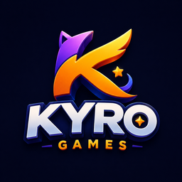
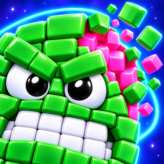
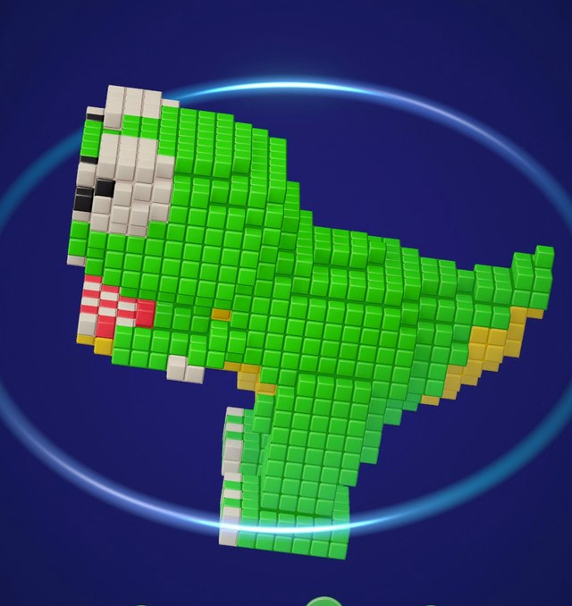
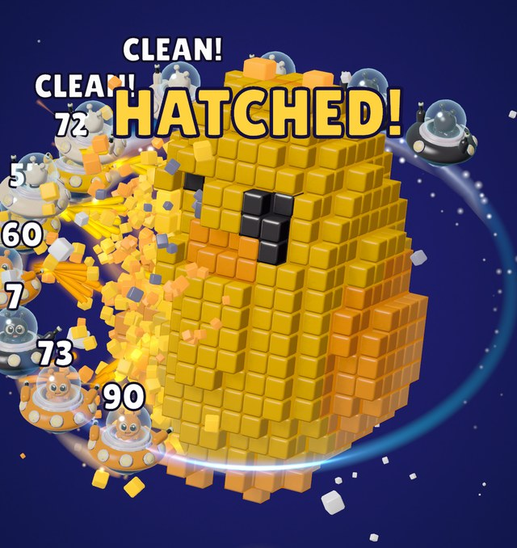
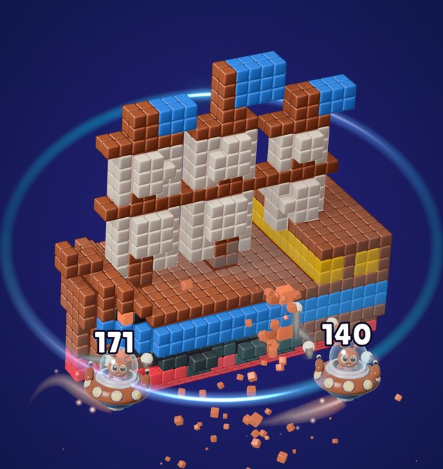
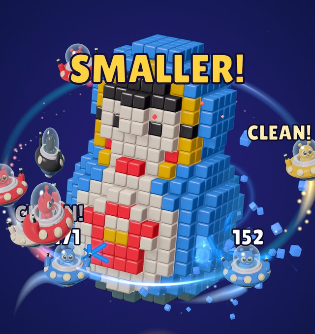
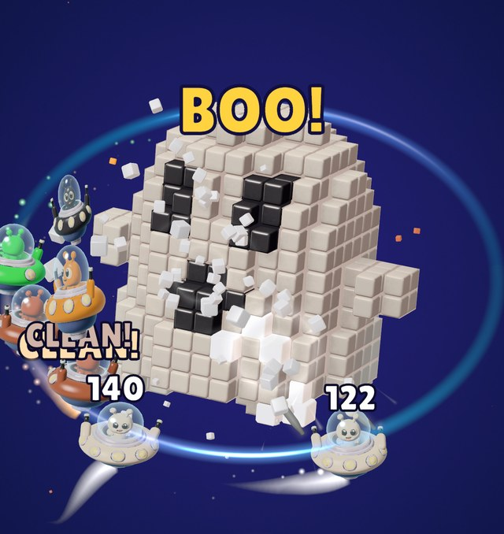
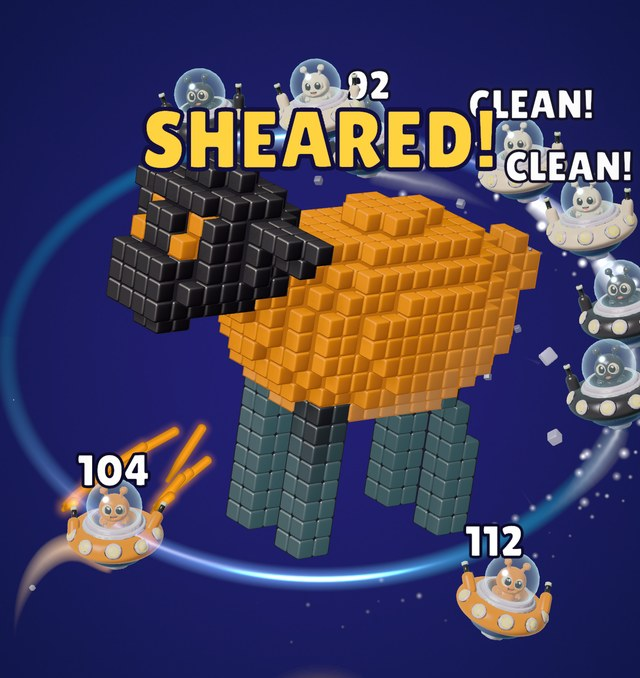
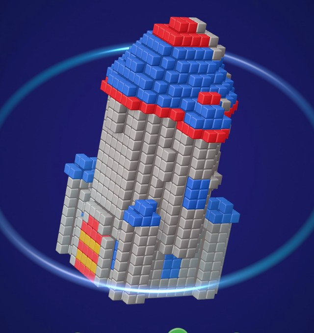
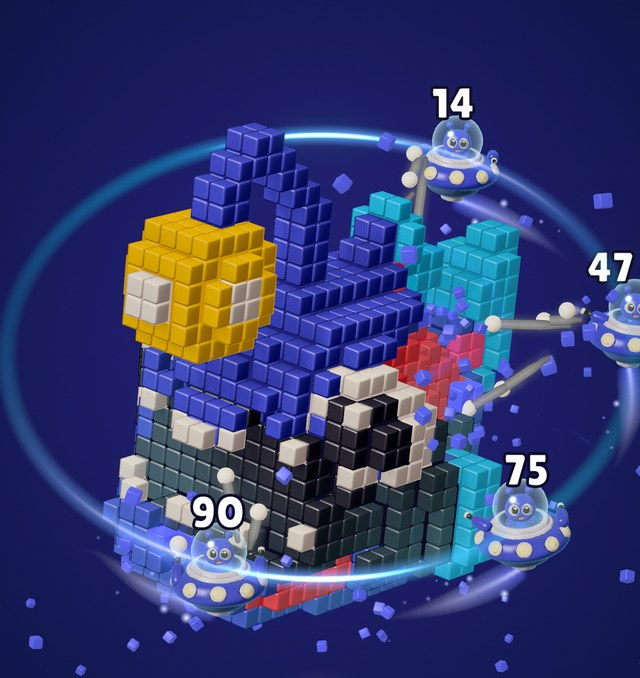

Deniz Özkan
3D/Game Artist & solo developer · Kyro Games · Istanbul
Three puzzle games live on the App Store, all built solo. Day job: lead game artist on hybrid-casual titles. Everything I would show you at a table is on this page.

A toy sculpture floats in space. Colour-coded UFOs orbit it on a glowing ring and blast every cube of their own colour. You turn the sculpture by hand; every one hides a surprise inside. Unity 6, custom mesh-to-voxel pipeline in Blender.
Sculptures (60 in the game, each with a reveal inside)








Ad concepts (4 vertical creatives, 20–27 s)
Numbers so far (App Store Connect 5 Sep–4 Oct · Firebase 8 Sep–5 Oct · organic only, zero paid UA)
| Store page conversion | 5.6% 30-day avg · ~8% in launch week |
| Avg engagement per active user | 17 min 05 s · 2.9 sessions |
| Level win rate | 88% (687 starts / 606 wins) |
| Traffic source | App Store Browse only · no ads, no search campaigns |
| Crash-free users | 91.7% (7 days) |
| Monetisation | Off by design until a test; rewarded + interstitial + no-ads pack designed in |
| Retention | Not enough data yet (small organic base). That is why I want a test. |
 Chonk OutCozy cat block-slide puzzle · iOS · released 16 Aug 2026
Chonk OutCozy cat block-slide puzzle · iOS · released 16 Aug 2026
LIVE ON iOS101 HAND-BUILT LEVELSONE THUMB · LIGHT
Round, sleepy, extremely in-the-way cats. Slide them off the board through the gates that match their colour. One-way chonks, sleepy stacks, frozen cats, jars and chains keep it fresh.
 Moonpaw ManorStory-driven cat match-3 set in Istanbul · iOS · released 13 Jul 2026
Moonpaw ManorStory-driven cat match-3 set in Istanbul · iOS · released 13 Jul 2026
LIVE ON iOS100+ LEVELSIAP + SUBSCRIPTION LIVE
Moonpaw the wizard cat and Toto the mouse bring the light back to a moonlit manor above the Bosphorus. Classic match-3 blast with a story layer, a character mascot and a full shop and subscription flow.
3D art, creatives, videoFreelance or full-time
Full 3D pipeline (Blender → Unity), stylised and photoreal. Store creatives, ad videos, fast Unity prototypes. AI-assisted photoreal video for large-format projection: below is a test shot for a holographic mesh-screen show.